건축산업기사 (2018-08-19 기출문제)
1과목: 건축계획
1. 고층사무소 건축의 기준층 평면형태를 한정시키는 요소와 가장 관계가 먼 것은?
- 방화구획상 면적
- 구조상 스팬의 한도
- 오피스 랜드시케이핑에 의한 가구배치
- 덕트, 배관, 배선 등 설비시스템상의 한계
(정답률: 64%)

2. 한식주택과 양식주택에 관한 설명으로 옳지 않은 것은?
- 한식주택의 실은 혼용도이다.
- 한식주택은 좌식생활 중심이다.
- 양식주택에서 가구는 부차적 존재이다.
- 양식주택의 평면은 실의 기능별 분화이다.
(정답률: 79%)
3. 상점 계획에 관한 설명으로 옳지 않은 것은?
- 상점 내 고객의 동선은 짧게, 종업원의 동선은 길게 계획한다.
- 고객의 동선과 종업원의 동선이 만나는 곳에 카운터 케이스를 놓는다.
- 상점의 총 면적이란 일반적으로 건축면적 가운데 영업을 목적으로 사용되는 면적을 말한다.
- 국부조명은 배열을 바꾸는 경우를 고려하여 자유롭게 수량, 방향, 위치를 변경할 수 있도록 한다.
(정답률: 82%)
4. 다음 근린생활권의 주택지의 단위 중 가장 기본이 되는 최소한의 단위는?
- 인보구
- 근린주구
- 근린분구
- 커뮤니티 센터
(정답률: 85%)
5. 공장건축 중 무창공장에 관한 설명으로 옳지 않은 것은?
- 방직공장 등에서 사용된다.
- 공장 내 조도를 균일하게 할 수 있다.
- 온·습도의 조절이 유창공장에 비해 어렵다.
- 외부로부터 자극이 적으나 오히려 실내발생 소음은 커진다.
(정답률: 75%)
6. 공장건축의 지붕형식에 관한 설명으로 옳지 않은 것은?
- 솟을지붕은 채광 및 자연환기에 적합한 형식이다.
- 평지붕은 가장 단순한 형식으로 2~3층의 중층식 공장건축물의 최상층에 적용된다.
- 톱날지붕은 북향의 채광창을 통해 일정한 조도를 가진 약한 광선을 받아들일 수 있다.
- 샤렌구조 지붕은 최근에 많이 사용되는 유형으로 기둥이 많이 필요하다는 단점이 있다.
(정답률: 75%)
7. 상점의 판매형식에 관한 설명으로 옳지 않은 것은?
- 대면판매는 진열면적이 감소된다는 단점이 있다.
- 측면판매는 판매원의 정위치를 정하기 어렵고 불안정하다.
- 측면판매는 상품이 손에 잡혀서 충동적 구매와 선택이 용이하다.
- 대면판매는 상품의 설명이나 포장 등이 불편하다는 단점이 있다.
(정답률: 78%)
8. 단독주택의 복도 계획에 관한 설명으로 옳지 않은 것은?
- 중복도는 채광, 통풍에 유리하다.
- 연면적 50m2 이하의 주택에 복도를 두는 것은 비경제적이다.
- 복도를 계획하는 경우, 복도의 면적은 일반적으로 연면적의 10% 정도이다.
- 복도로 연결된 각 공간의 문은 복도의 폭이 좁을 경우에는 안여닫이로 계획하는 것이 좋다.
(정답률: 72%)
9. 아파트의 단위주거 단면구성 형식 중 복층형에 관한 설명으로 옳지 않은 것은?
- 주택 내의 공간의 변화가 있다.
- 단층형에 비해 공용면적이 감소한다.
- 구조 및 설비가 단순하여 설계가 용이하고 경제적이다.
- 복층형 중 단위주거의 평면이 2개 층에 걸쳐져 있는 경우를 듀플렉스형이라 한다.
(정답률: 60%)
10. 다음의 아파트 평면형식 중 각 세대의 프라이버시 확보가 가장 용이한 것은?
- 집중형
- 계단실형
- 편복도형
- 중복도형
(정답률: 78%)
11. 건축계획의 진행 과정에 있어서 다음 중 가장 먼저 선행되는 작업은?
- 기본계획
- 조건파악
- 기본설계
- 실시설계
(정답률: 78%)
12. 사무소 건축의 실단위 계획 중 개방형 배치에 관한 설명으로 옳은 것은?
- 공사비가 비교적 높다.
- 프라이버시 유지가 용이하다.
- 방 깊이에 변화를 줄 수 없다.
- 모든 면적을 유용하게 이용할 수 있다.
(정답률: 69%)
13. 다음 설명에 알맞은 주거단지의 도로 유형은?
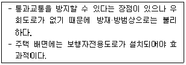
- 격자형
- T자형
- Loop형
- Cul-de-sac형
(정답률: 65%)
14. 주택의 동선계획에 관한 설명으로 옳지 않은 것은?
- 동선은 될 수 있는 한 단순하게 한다.
- 동선에는 공간이 필요하고 가구를 둘 수 없다.
- 서로 다른 동선은 근접 교차시키는 것이 좋다.
- 동선의 길이는 될 수 있는 한 짧게 하는 것이 좋다.
(정답률: 77%)
15. 다음 중 사무소 건물의 코어 내에 들어갈 공간으로 적절하지 않은 것은?
- 공조실
- 계단실
- 중앙 감시실
- 전기 배선 공간
(정답률: 62%)
16. 학교 배치 형식 중 분산 병렬형에 관한 설명으로 옳지 않은 것은?
- 넓은 부지를 필요로 한다.
- 일종의 핑거 플랜(finger plan)이다.
- 구조계획이 간단하고 규격형의 이용이 가능하다.
- 일조, 통풍 등 교실의 환경조건을 균등하게 할 수 없다.
(정답률: 67%)
17. 사무소 건축의 엘리베이터 계획에 관한 설명으로 옳지 않은 것은?
- 일렬 배치는 8대를 한도로 한다.
- 교통동선의 중심에 설치하여 보행거리가 짧도록 배치한다.
- 대면배치 시 대면거리는 동일 군 관리의 경우 3.5~4.5m로 한다.
- 여러 대의 엘리베이터를 설치하는 경우, 그룹별 배치와 군 관리 운전방식으로 한다.
(정답률: 80%)
18. 주택 부엌에서 작업삼각형의 구성에 속하지 않는 것은?
- 냉장고
- 개수대
- 배선대
- 가열대
(정답률: 75%)
19. 학교운영방식에 관한 설명으로 옳지 않은 것은?
- 교과교실형은 학생의 이동이 많으므로 소지품 보관장소 등을 고려할 필요가 있다.
- 종합교실형은 하나의 교실에서 모든 교과수업을 행하는 방식으로 초등학교 저학년에게 적합하다.
- 일반 및 특별교실형은 우리나라 대부분의 초등학교에서 적용되었던 방식으로 이제는 적용되지 않고 있다.
- 플래툰형은 각 학급을 2분단으로 나누어 한 쪽이 일반교실을 사용할 때, 다른 한 쪽은 특별교실을 사용하는 방식이다.
(정답률: 78%)
20. 다음의 상점 진열대 배치 형식 중 상품의 전달 및 고객의 동선상 흐름이 가장 빠른 형식은?
- 굴절형
- 직렬형
- 환상형
- 복합형
(정답률: 83%)
2과목: 건축시공
21. 목구조에서 기초 위에 가로놓아 상부에서 오는 하중을 기초로 전달하며, 기둥 밑을 고정하고 벽을 치는 뼈대가 되는 것은?
- 층보
- 층도리
- 깔도리
- 토대
(정답률: 67%)
22. 공사표준시방서에 기재하는 사항에 해당되지 않는 것은?
- 공법에 관한 사항
- 검사 및 시험에 관한 사항
- 재료에 관한 사항
- 공사비에 관한 사항
(정답률: 74%)
23. 알루미늄 창호공사에 관한 설명으로 옳지 않은 것은?
- 알칼리에 약하므로 모르타르와의 접촉을 피한다.
- 알루미늄은 부식방지 조치가 불필요하다.
- 녹막이에는 연(鉛)을 함유하지 않은 도료를 사용한다.
- 표면이 연하여 운반, 설치작업 시 손상되기 쉽다.
(정답률: 77%)
24. 해머글래브를 케이싱 내에 낙하시켜 굴착을 완료한 후 철근망을 삽입하고 케이싱을 뽑아 올리면서 콘크리트를 타설하는 현장타설 콘크리트말뚝 공법은?
- 베노토 공법
- 이코스 공법
- 어스드릴 공법
- 역순환 공법
(정답률: 65%)
25. 아스팔트 방수에서 아스팔트 프라이머를 사용하는 목적으로 옳은 것은?
- 방수층의 습기를 제거하기 위하여
- 아스팔트 보호누름을 시공하기 위하여
- 보수 시 불량 및 하자 위치를 쉽게 발견하기 위하여
- 콘크리트 바탕과 방수시트의 접착을 양호하게 하기 위하여
(정답률: 68%)
26. 다음 공정표 중 공사의 기성고를 표시하는데 가장 편리한 것은?
- 횡선공정표
- 사선공정표
- PERT
- CPM
(정답률: 56%)
27. 다음 중 철골용접과 관계 없는 용어는?
- 오버랩(Overlap)
- 리머(Reamer)
- 언더컷(Under cut)
- 블로우 홀(Blow hole)
(정답률: 65%)
28. 표준관입시험에서 로드의 머리부에 자유낙하 시키는 해머의 적정 높이로 옳은 것은? (단, 높이는 로드의 머리부로부터 해머까지의 거리임)
- 30cm
- 52cm
- 63.5cm
- 76cm
(정답률: 65%)
29. 벽과 바닥의 콘크리트 타설을 한 번에 가능하도록 벽체와 바닥 거푸집을 일체로 제작하여 한번에 설치하고 해체할 수 있도록 한 것은?
- 유로 폼(Euro form)
- 클라이밍 폼(Climbing form)
- 플라잉 폼(Flying form)
- 터널 폼(Tunnel form)
(정답률: 51%)
30. 다음 각 철물들이 사용되는 장소로 옳지 않은 것은?
- 논 슬립(non slip) - 계단
- 피벗(pivot) - 창호
- 코너 비드(corner bead) - 바닥
- 메탈 라스(metal lath) - 벽
(정답률: 69%)
31. 고층 건물 외벽공사 시 적용되는 커튼월 공법의 특징이 아닌 것은?
- 내력벽으로서의 역할
- 외벽의 경량화
- 가설공사의 절감
- 품질의 안정화
(정답률: 64%)
32. 독립기초에서 주각을 고정으로 간주할 수 있는 방법으로 가장 타당한 것은?
- 기초판을 크게 한다.
- 기초 깊이를 깊게 한다.
- 철근을 기초판에 많이 배근한다.
- 지중보를 설치한다.
(정답률: 59%)
33. 서중콘크리트에 관한 설명으로 옳지 않은 것은?
- 콘크리트의 공기연행이 용이하여 혼화제 사용이 불필요하다.
- 콘크리트의 배합은 소요의 강도 및 워커빌리티를 얻을 수 있는 범위 내에서 단위 수량을 적게 한다.
- 비빈 콘크리트는 가열되거나 건조로 인하여 슬럼프가 저하하지 않도록 적당한 장치를 사용하여 되도록 빨리 운송하여 타설하여야 한다.
- 콘크리트 재료는 온도가 낮아질 수 있도록 하여야 한다.
(정답률: 55%)
34. 철근콘크리트의 염해를 억제하는 방법으로 옳은 것은?
- 콘크리트의 피복두께를 적절히 확보한다.
- 콘크리트 중의 염소이온을 크게 한다.
- 물시멘트비가 높은 콘크리트를 사용한다.
- 단위수량을 크게 한다.
(정답률: 59%)
35. 계약 체결 후 일반적인 건축공사의 진행순서로 옳은 것은?
- 공사착공준비→가설공사→토공사→기초공사
- 가설공사→공사착공준비→토공사→기초공사
- 공사착공준비→토공사→기초공사→가설공사
- 토공사→가설공사→공사착공준비→기초공사
(정답률: 68%)
36. 철골구조에서 가새를 조일 때 사용하는 보강재는?
- 거셋 플레이트(Gusset plate)
- 슬리브 너트(Sleeve nut)
- 턴 버클(Turn buckle)
- 아이 바(Eye bar)
(정답률: 56%)
37. 콘크리트벽돌 공간쌓기에 관한 설명으로 옳지 않은 것은?
- 공간쌓기는 도면 또는 공사시방서에서 정한 바가 없을 때에는 안쪽을 주벽체로 하고 바깥쪽은 반장쌓기로 한다.
- 안쌓기는 연결재를 사용하여 주벽체에 튼튼히 연결한다.
- 연결재로 벽돌을 사용할 경우 벽돌을 걸쳐대고 끝에는 이오토막 또는 칠오토막을 사용한다.
- 연결재의 배치 및 거리 간격의 최대 수직거리는 400mm를 초과해서는 안 된다.
(정답률: 58%)
38. 목재의 변재와 심재에 관한 설명으로 옳지 않은 것은?
- 심재는 변재보다 비중이 크다.
- 심재는 변재보다 신축변형이 작다.
- 변재는 심재보다 내후성이 크다.
- 변재는 심재보다 강도가 약하다.
(정답률: 67%)
39. 철근콘크리트 기둥의 단면이 0.4m × 0.5m 이고 길이가 10m 일 때 이 기둥의 중량(톤)은 약 얼마인가?
- 3.6톤
- 4.8톤
- 6톤
- 6.4톤
(정답률: 61%)
40. 방부성이 우수하지만 악취가 나고, 흑갈색으로 외관이 불미하므로 눈에 보이지 않는 토대, 기둥, 도리 등에 사용되는 방부제는?
- P.C.P
- 콜타르
- 크레오소트 유
- 에나멜페인트
(정답률: 61%)
3과목: 건축구조
41. H-500×200×10×16로 표기된 H형강에서 웨브의 두께는?
- 10mm
- 16mm
- 200mm
- 500mm
(정답률: 57%)
42. 철근의 이음에 관한 기준으로 옳은 것은?
- 용접이음은 철근의 설계기준 항복강도 fy의 125% 이상을 발휘하 수 있는 완전용접이여야 한다.
- 인장이형철근의 이음은 A급, B급으로 분류하며 어떤 경우라도 200mm 이상이어야 한다.
- 압축이형철근의 이음을 제외하고 D35를 초과하는 철근은 겹침이음할 수 있다.
- 횜부재에서 서로 직접 접촉되지 않게 겹침이음된 철근은 횡방향으로 소요 겹침이음길이의 1/3 또는 200mm 중 작은 값 이상 떨어지지 않아야 한다.
(정답률: 51%)
43. 다음 그림과 같은 독립기초에서 지반 반력의 분포형태로 옳은 것은?
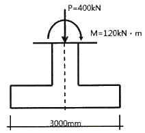
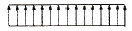
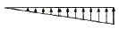
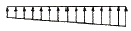
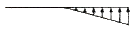
(정답률: 62%)
44. 다음 조건을 가진 단근보의 강도설계법에 따른 설계모멘트(øMn)를 구하면?
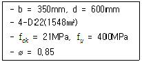
- 270 kN·m
- 280 kN·m
- 290 kN·m
- 300 kN·m
(정답률: 47%)
45. 그림과 같은 구조물의 편별 결과는?
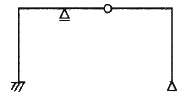
- 정정
- 1차 부정정
- 2차 부정정
- 3차 부정정
(정답률: 58%)
46. 그림과 같은 정정 라멘에서 F점의 휨모멘트는?
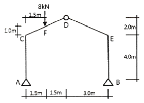
- 4kN·m
- 3kN·m
- 2kN·m
- 1kN·m
(정답률: 42%)
47. 그림과 같은 중공형 단면에서 도심축에 대한 단면2차반지름은?
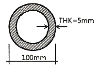
- 27.4mm
- 33.6mm
- 45.2mm
- 52.6mm
(정답률: 49%)
48. 강도설계법에서 처짐을 계산하지 않는 경우에 있어 보의 최소 두께(depth) 규준으로 옳지 않은 것은? (단, 보의 길이는 ℓ, 보통중량콘크리트와 400MPa 철근 사용)
- 단순지지 : ℓ/12
- 1단연속 : ℓ/18.5
- 양단연속 : ℓ/21
- 캔틸레버 : ℓ/8
(정답률: 56%)
49. 강구조 고력볼투접합의 특징으로 옳지 않은 것은?
- 접합부 강성이 높아 접합부 변형이 거의 없다.
- 피로강도가 낮은 편이다.
- 강한 조임력으로 너트의 풀림이 없다.
- 접합의 종류로는 마찰접합, 인장접합, 지압접합이 있다.
(정답률: 62%)
50. 그림과 같은 트러스의 S부재 응력의 크기는?
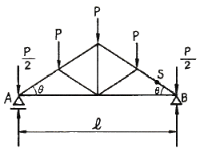
- (1/2)P · sinθ
- (3/2)P · cosθ
- (3/2)P · sinθ
- (3/2)P · cosecθ
(정답률: 40%)
51. 강구조에서 사용하는 용어가 서로 관계 없는 것끼리 연결된 것은?
- 기둥접합 – 메탈터치(Metal touch)
- 주각부 – 베이스 플레이트(Base plate)
- 판보 – 커버플레이트(Cover plate)
- 고력볼트 접합 – 앤드탭(End tap)
(정답률: 55%)
52. 철근의 부착과 정착에 관한 설명으로 옳지 않은 것은?
- 철근이 콘크리트 속에서 빠져나오지 못하게 하는 것을 정착이라 한다.
- 철근의 정착길이는 철근의 직경에 비례하며 철근의 강도에 반비례한다.
- 휨 응력의 전달 시 철근과 콘크리트 간의 경계면에 발생하는 전단응력을 부착응력이라 한다.
- 철근과 콘크리트 간의 부착력은 콘크리트의 강도가 높아질수록 증가한다.
(정답률: 52%)
53. 다음은 철근콘크리트 벽체 설계에 대한 기준이다. ( )안에 들어갈 내용을 순서대로 바르게 나타낸 것은?
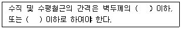
- 2배, 300mm
- 2배, 450mm
- 3배, 300mm
- 3배, 450mm
(정답률: 42%)
54. 그림과 같은 트러스에서 T부재의 부재력은?
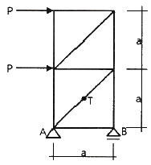
- P
- 1.5P
- √2 P
- 2√2 P
(정답률: 50%)
55. 철근콘크리트구조의 장·단점에 관한 설명으로 옳지 않은 것은?
- 철근콘크리트구조는 내구성, 내진성, 내화성이 우수하다.
- 철근콘크리트구조는 콘크리트의 강도상 단점을 철근이 보완하고 있다.
- 철근콘크리트구조는 건조수축에 의하여 변형이나 균열이 발생될 수 있다.
- 철근콘크리트구조는 강구조보다 소요되는 재료의 중량이 작으므로 자중이 가볍다.
(정답률: 64%)
56. 지름 10mm, 길이 15m의 강봉에 무게 8kN의 인장력이 작용할 경우 늘어난 길이는? (단, Es = 2.0×105MPa)
- 4.32mm
- 5.34mm
- 7.64mm
- 9.32mm
(정답률: 47%)
57. 그림은 구조용 강봉의 응력-변형율 곡선이다. A점은 무엇인가?
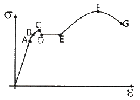
- 탄성한계점
- 비례한계점
- 상위항복점
- 하위항복점
(정답률: 54%)
58. 그림과 같은 단순보의 중앙에서 보단면내의 O점의 휨응력도는?
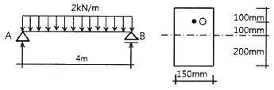
- + 0.50MPa
- - 0.50MPa
- + 0.75MPa
- - 0.75MPa
(정답률: 36%)
59. 그림과 같은 부정정보에서 전단력이 ‘0’이 되는 위치 x는?
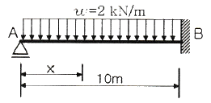
- 2.75 m
- 3.75 m
- 4.75 m
- 5.75 m
(정답률: 47%)
60. 다음 보(beam) 중에서 정정구조물이 아닌 것은?
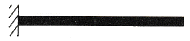
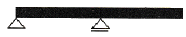
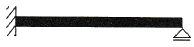
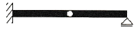
(정답률: 55%)
4과목: 건축설비
61. 실내 냉방부하 중 현열부하가 3000W, 잠열부하가 500W일 때 현열비는?
- 0.14
- 0.17
- 0.86
- 0.92
(정답률: 54%)
62. 온수난방 배관에 역환수 방식(reverse return)을 채택하는 가장 주된 이유는?
- 배관경을 가늘게 하기 위해서
- 배관의 신축을 원활히 흡수하기 위해서
- 온수를 방열기에 균등히 분배하기 위해서
- 배관 내 스케일 발생을 감소시키기 위해서
(정답률: 68%)
63. 다음 중 수변전 설비의 설계 순서로 가장 알맞은 것은?
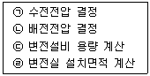
- ㉠→㉡→㉢→㉣
- ㉠→㉢→㉡→㉣
- ㉣→㉢→㉡→㉠
- ㉢→㉣→㉡→㉠
(정답률: 58%)
64. 다음의 공기조화방식 중 전수방식에 속하는 것은?
- 룸 쿨러방식
- 단일덕트방식
- 팬코일 유닛방식
- 멀티존 유닛방식
(정답률: 68%)
65. 축전지의 충전방식 중 전지의 자기방전을 보충함과 동시에 상용부하에 대한 전력공급은 충전기가 부담하도록 하되 충전기가 부담하기 어려운 일시적인 대전류부하는 축전지로 하여금 부담하게 하는 방식은?
- 보통 충전
- 급속 충전
- 균등 충전
- 부동 충전
(정답률: 56%)
66. 옥내 배선의 간선 굵기 결정 시 고려할 사항과 가장 거리가 먼 것은?
- 전압강하
- 배선방법
- 허용전류
- 기계적 강도
(정답률: 56%)
67. 30m 높이에 있는 옥상탱크에 펌프로 시간당 24m3의 물을 공급할 때, 펌프의 축동력은? (단, 배관 중의 마찰손실은 전양정의 20%, 흡입양정은 4m, 펌프의 효율은 55%이다.)
- 3.82kW
- 4.85kW
- 5.65kW
- 6.12kW
(정답률: 44%)
68. 고층 건물에서 급수설비를 조닝하는 가장 주된 이유는?
- 급수압력의 균등화
- 급수 배관길이의 감소
- 배관 내 스케일의 발생 방지
- 급수펌프 운전의 편리성 향상
(정답률: 63%)
69. 덕트(Duct)에 관한 설명으로 옳은 것은?
- 정방형 덕트는 관마찰저항이 가장 적다.
- 고속덕트의 단면은 보통 장방향으로 한다.
- 스플릿 댐퍼는 분기부에 설치하여 풍량조절용으로 사용된다.
- 버터플라이 댐퍼는 대형 덕트의 개폐용으로 주로 사용된다.
(정답률: 49%)
70. 오배수 입상관으로부터 취출하여 위쪽의 통기관에 연결되는 배관으로, 오배수 입상관 내의 압력을 같게 하기 위한 도피통기관은?
- 신정통기관
- 각개통기관
- 루프통기관
- 결합통기관
(정답률: 43%)
71. 바닥복사난방에 관한 설명으로 옳지 않은 것은?
- 복사열에 의하므로 쾌적감이 높다.
- 방열기가 없으므로 바닥 면적의 이용도가 높다.
- 외기침입이 있는 곳에서도 난방감을 얻을 수 있다.
- 난방부하 변동에 따른 방열량 조절이 용이하므로 간헐난방에 적합하다.
(정답률: 69%)
72. 배수 배관에 관한 설명으로 옳지 않은 것은?
- 건물 내에서 지중배관은 피하고 피트 내 또는 가공배관을 한다.
- 배수는 원칙적으로 배수펌프에 의해 옥외로 배출하도록 한다.
- 엘리베이터 샤프트, 엘리베이터 기계실 등에는 배수 배관을 설치하지 않는다.
- 트랩의 봉수보호, 배수의 원활한 흐름, 배관 내의 환기를 위해 통기배관을 설치한다.
(정답률: 51%)
73. 어느 건물에 옥내소화전이 2, 3층에 각각 2개씩 설치되어 있고, 1층에 3개가 설치되어 있다. 옥내소화전설비 수원의 저수량은 최소 얼마 이상이 되도록 하여야 하는가?(2021년 04월 01일 개정된 규정 적용됨)
- 2.6m3
- 5.2m3
- 7.8m3
- 12.4m3
(정답률: 55%)
74. 글로브 밸브에 관한 설명으로 옳지 않은 것은?
- 유량 조절용으로 주로 사용된다.
- 직선 배관 중간에 설치되며 유체에 대한 저항이 크다.
- 슬루스 밸브에 비해 리프트가 커서 개폐에 많은 시간이 소요된다.
- 유체가 밸브의 아래로부터 유입하여 밸브시트 사이를 통해 흐르게 되어 있다.
(정답률: 51%)
75. 다음 설명에 알맞은 보일러는?
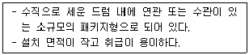
- 관류 보일러
- 입형 보일러
- 수관 보일러
- 주철제 보일러
(정답률: 55%)
76. 난방부하가 10000W인 방을 온수난방할 경우 방열기의 온수순환량은? (단, 물의 비열은 4.2kJ/kg·K, 방열기의 입구 수온은 90℃, 출구 수온은 80℃이다.)
- 약 764kg/h
- 약 857kg/h
- 약 926kg/h
- 약 1034kg/h
(정답률: 39%)
77. 보일러의 출력표시 중 난방부하와 급탕부하를 합한 용량으로 표시되는 것은?
- 정미출력
- 상용출력
- 정격출력
- 과부하출력
(정답률: 60%)
78. 화재를 진압하거나 인명구조활동을 위하여 사용하는 설비로서 제연설비, 연결송수관설비 등을 포함하는 것은?
- 소화설비
- 경보설비
- 피난설비
- 소화활동설비
(정답률: 64%)
79. 정화조에서 호기성(好氣性)균을 필요로 하는 곳은?
- 부패조
- 여과조
- 산화조
- 수독조
(정답률: 71%)
80. 최대수요전력을 구하기 위한 것으로 총 부하설비용량에 대한 최대수요전력의 비율로 나타내는 것은?
- 역률
- 부하율
- 수용률
- 부등률
(정답률: 49%)
5과목: 건축관계법규
81. 부설주차장 설치대상 시설물로서 위락시설의 시설면적이 1500m2일 때 설치하여야 하는 부설주차장의 최소 주차대수는?
- 10대
- 13대
- 15대
- 20대
(정답률: 65%)
82. 6층 이상의 거실면적의 합계가 4000m2인 경우, 다음 중 설치하여야 하는 승용승강기의 최소 대수가 가장 많은 건축물의 용도는? (단, 8인승 승강기의 경우)
- 업무시설
- 숙박시설
- 문화 및 집회시설 중 전시장
- 문화 및 집회시설 중 공연장
(정답률: 52%)
83. 주차장법령상 다음과 같이 정의되는 용어는?
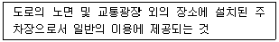
- 노상주차장
- 노외주차장
- 부설주차장
- 기계식주차장
(정답률: 69%)
84. 부설주차장이 대통령령으로 정하는 규모 이하인 경우 시설물의 부지 인근에 단독 또는 공동으로 부설주차장을 설치할 수 있다. 다음 시설물의 부지 인근의 범위에 관한 기준으로 ( )안에 알맞은 것은?
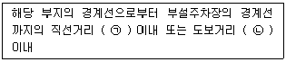
- ㉠100m, ㉡ 200m
- ㉠200m, ㉡ 400m
- ㉠300m, ㉡ 600m
- ㉠400m, ㉡ 800m
(정답률: 70%)
85. 다음 중 용도변경과 관련된 시설군과 해당시설군에 속하는 건축물의 용도의 연결이 옳지 않은 것은?
- 산업 등 시설군 - 운수시설
- 전기통신시설군 - 발전시설
- 문화집회시설군 - 판매시설
- 교육 및 복지시설군 – 의료시설
(정답률: 67%)
86. 건축 허가 신청에 필요한 설계도서 중 배치도에 표시하여야 할 사항에 속하지 않는 것은?
- 건축물의 용도별 면적
- 공개공지 및 조경계획
- 주차동선 및 옥외주차계획
- 대지에 접한 도로의 길이 및 너비
(정답률: 48%)
87. 건축물의 설비기준 등에 관한 규칙에 따라 피뢰설비를 설치하여야 하는 건축물의 높이 기준은?
- 높이 10m 이상의 건축물
- 높이 20m 이상의 건축물
- 높이 30m 이상의 건축물
- 높이 50m 이상의 건축물
(정답률: 73%)
88. 생산녹지지역과 자연녹지지역 안에서 모두 건축할 수 없는 건축물은?
- 아파트
- 수련시설
- 노유자시설
- 방송통신시설
(정답률: 73%)
89. 건축물의 출입구에 설치하는 회전문은 계단이나 에스컬레이터로부터 최소 얼마 이상의 거리를 두어야 하는가?
- 0.5m
- 1.0m
- 1.5m
- 2.0m
(정답률: 65%)
90. 다음은 주차전용건축물의 주차면적비율에 관한 기준 내용이다. ( ) 안에 알맞은 것은? (단, 주차장 외의 용도로 사용되는 부분이 의료시설인 경우)
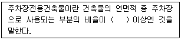
- 70%
- 80%
- 90%
- 95%
(정답률: 47%)
91. 다음의 지하층과 피난층 사이의 개방공간 설치에 관한 기준 내용 중 ( )안에 알맞은 것은?
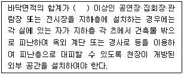
- 1000m2
- 2000m2
- 3000m2
- 4000m2
(정답률: 57%)
92. 건축물의 주요구조부를 해체하지 아니하고 같은 대지의 다른 위치로 옮기는 것을 의미하는 용어는?
- 증축
- 이전
- 개축
- 재축
(정답률: 79%)
93. 건축법령상 제2종 근린생활시설에 속하는 것은?
- 무도장
- 한의원
- 도서관
- 일반음식점
(정답률: 65%)
94. 다음의 피난계단의 설치에 관한 기준 내용 중 ( ) 안에 알맞은 것은? (단, 공동주택이 아닌 경우)
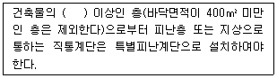
- 6층
- 11층
- 16층
- 21층
(정답률: 42%)
95. 지표면으로부터 건축물의 지붕틀 또는 이와 비슷한 수평재를 지지하는 벽·깔도리 또는 기둥의 상단까지의 높이로 산정하는 것은?
- 층고
- 처마높이
- 반자높이
- 바닥높이
(정답률: 57%)
96. 같은 건축물 안에 공동주택과 위락시설을 함께 설치하고자 하는 경우에 관한 기준 내용으로 옳지 않은 것은?
- 건축물의 주요 구조부를 방화구조로 할 것
- 공동주택과 위락시설은 서로 이웃하지 아니하도록 배치할 것
- 공동주택과 위락시설은 내화구조로 된 바닥 및 벽으로 구획하여 서로 차단할 것
- 공동주택의 출입구와 위락시설의 출입구는 서로 그 보행거리가 30m 이상이 되도록 설치할 것
(정답률: 49%)
97. 건축물에 급수·배수·난방 및 환기설비를 설치할 경우 건축기계설비기술사 또는 공조냉동기계기술사의 협력을 받아야 하는 건축물의 연면적 기준은?
- 1000m2 이상
- 2000m2 이상
- 5000m2 이상
- 10000m2 이상
(정답률: 58%)
98. 비상용승강기의 승강장에 설치하는 배연설비의 구조에 관한 기준 내용으로 옳지 않은 것은?
- 배연기에는 예비전원을 설치할 것
- 배연구가 외기에 접하지 아니하는 경우에는 배연기를 설치할 것
- 배연구는 평상시에는 열린 상태를 유지하고, 배연에 의한 기루에 의해 닫히도록 할 것
- 배연기는 배연구의 열림에 따라 자동적으로 작동하고, 충분한 공기배출 또는 가압능력이 있을 것
(정답률: 71%)
99. 다음은 건축법령상 지하층의 정의이다. ( ) 안에 알맞은 것은?
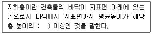
- 2분의 1
- 3분의 1
- 3분의 2
- 4분의 1
(정답률: 74%)
100. 주거지역의 세분 중 공동주택 중심의 양호한 주거환경을 보호하기 위하여 필요한 지역은?
- 제1종전용주거지역
- 제2종전용주거지역
- 제1종일반주거지역
- 제2종일반주거지역
(정답률: 59%)